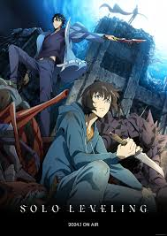
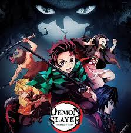
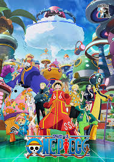
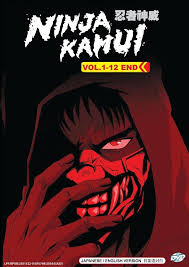

Follows the adventures Sung Jinwoo in a world that is constantly threatened by monsters and the evil forces. In his battles Sung transforms himself from weakest hunter of all mankind to one of the strongest hunters in existence.

A family is attacked by demons and only two members survive - Tanjiro and his sister Nezuko, who is turning into a demon slowly. Tanjiro sets out to become a demon slayer to avenge his family and cure his sister.

Monkey D. Luffy sets off on an adventure with his pirate crew in hopes of finding the greatest treasure ever, known as the "One Piece."

Former ninja Joe Higan is ambushed by assassins who seek bloody revenge on him and his family for their betrayal, after escaping his clan and fleeing into rural America.